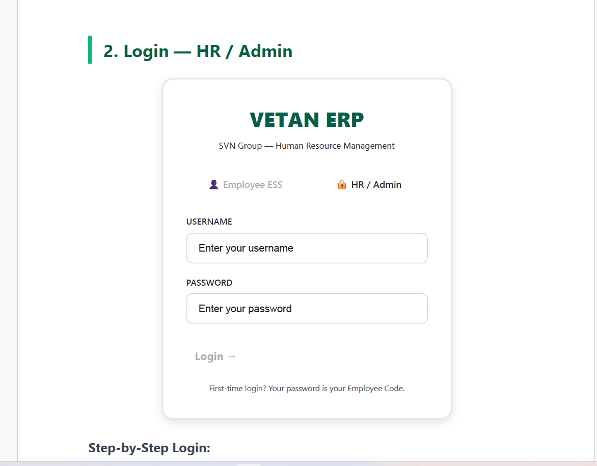
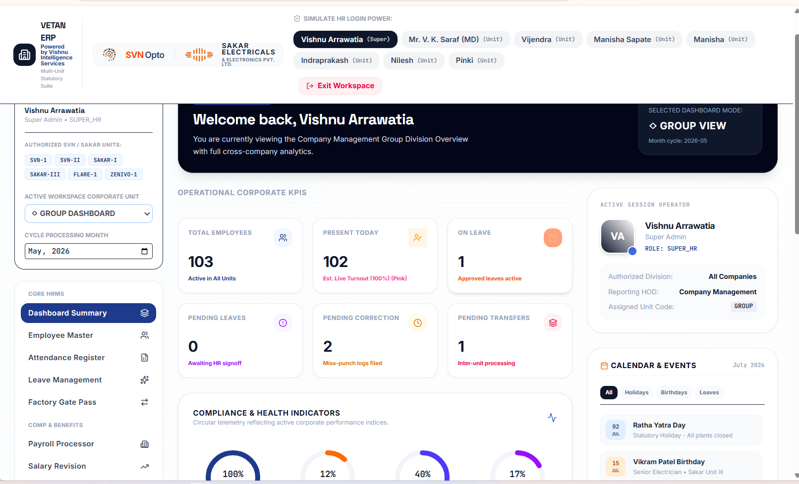
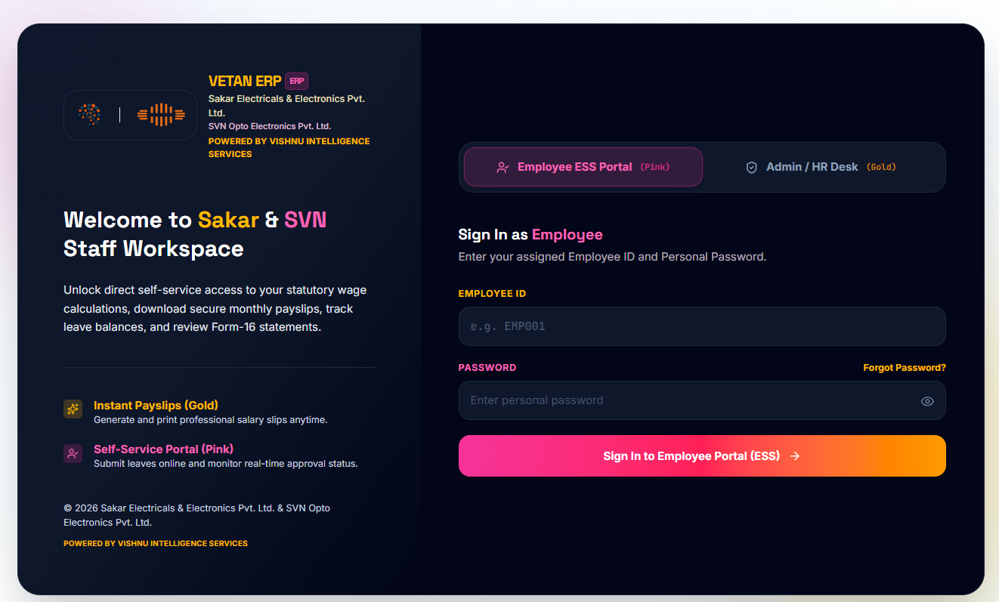

Sakar Electricals & Electronics Pvt. Ltd.
SVN Opto Electronics Pvt. Ltd.
Powered by Vishnu Intelligence Services
Version: Current VETAN ERP Production Build
URL: https://vetan-svn.vercel.app
Date: August 2026
| # | Section | Description |
|---|---|---|
| 1 | Login — Employee ESS | Employee self-service login |
| 2 | Login — HR / Admin | HR administrator login |
| 3 | Dashboard Overview | Main control center |
| 4 | Employee Master | Add, edit, search employees |
| 5 | Attendance Register | Mark daily attendance |
| 6 | Leave Management | Approve/reject leaves |
| 7 | Payroll Processor | Calculate salary |
| 8 | Salary Revision | Increments & changes |
| 9 | Loan Management | Loan tracking |
| 10 | Reports & Analytics | View reports |
| 11 | Employee ESS Portal | Employee self-service |
| 12 | Troubleshooting | Common issues & solutions |
| 13 | Quick Reference | Daily workflow checklist |
Employees use the Pink button to access the Self-Service Portal.

| Company | Password Format | Example |
|---|---|---|
| SVN Employees | Phone Last 4 Digits + Birth Year | Phone: XXXX9911, DOB: 1995 → Password: 99111995 |
| Sakar Employees | Default Password | 00001995 |
HR users use the Gold button to access the management panel.

| HR Name | Username | Access Level | Units |
|---|---|---|---|
| Vishnu Arrawatia | vishnu | Super Admin | All Units |
| Mr. V. K. Saraf | saraf | MD | All Units |
| Vijendra | vijendra | Unit HR | SVN-1 |
| Manisha Sapate | manisha_s | Unit HR | SVN-II |
| Manisha | manisha | Unit HR | Sakar-I |
| Indraprakash | indraprakash | Unit HR | Sakar-III |
After login, you will see the VETAN ERP Dashboard. This is your main control center.

1 Top Bar — Shows company logos (SVN Opto, Sakar Electricals) and HR user buttons
2 Left Sidebar — Navigation menu with all modules (Employee Master, Attendance, Leave, etc.)
3 Unit Selector — Dropdown to filter by specific unit or view GROUP DASHBOARD
4 Month Selector — Change the payroll processing month
5 KPI Cards — Total Employees, Present Today, On Leave, Pending Leaves
6 Compliance Indicators — Attendance rate, Leave utilization, Loan recovery
7 Quick Actions — Approve Leave, Miss Punch, Salary Revision
8 Active Session — Shows logged-in user details and role
9 Calendar & Events — Holidays, Birthdays, Upcoming leaves
| Section | Module | What It Does |
|---|---|---|
| CORE HRMS | Dashboard Summary | Main overview (current screen) |
| Employee Master | Add, edit, search employees | |
| Attendance Register | Mark daily attendance | |
| Leave Management | Approve/reject leave requests | |
| Factory Gate Pass | In/Out tracking | |
| COMP & BENEFITS | Payroll Processor | Calculate monthly salary |
| Salary Revision | Process increments | |
| Loan Management | Track employee loans | |
| LETTERS & ANALYTICS | Reports & Analytics | View all reports |
| HR Letters Hub | Generate letters | |
| Settings & Master | Company, HOD, Users (Super Admin only) |
The Employee Master is where you manage all employee records.
1 Search Box — Type Employee ID, Name, or Phone to find any employee
2 Company Filter — Select a specific company/unit to view only those employees
3 Add Employee — Click to add a new employee record
4 Import Excel — Bulk import employees from Excel
5 Export Excel — Download employee list as Excel
6 Edit Button — Click on employee row to modify record
| Field | Mandatory? | Description |
|---|---|---|
| Employee ID | ✅ Yes | Unique code (e.g., SV1ST0099) |
| Employee Name | ✅ Yes | Full name as per records |
| Company | ✅ Yes | SVN-1, SVN-II, Sakar-I, or Sakar-III |
| Department | No | Production, Assembly, Quality, etc. |
| Designation | No | Officer, Technician, Worker, etc. |
| Phone Number | No | 10-digit mobile number |
| Date of Joining | No | When employee joined |
| Base Salary | No | Monthly basic salary (₹) |
| Salary Structure | No | FIXED (recommended) |
Mark daily attendance for all employees.
| Code | Meaning | Color |
|---|---|---|
| P | Present | Green |
| A | Absent | Red |
| L | Leave | Yellow |
| WO | Weekly Off | Blue |
| PH | Paid Holiday | Green |
Approve or reject employee leave requests.
| Code | Full Name | Annual Allowance | Notes |
|---|---|---|---|
| PL | Privilege Leave | 18 days/year | Minimum 2 days application |
| CL | Casual Leave | 6 days/year | For personal/emergency work |
| SL | Sick Leave | 6 days/year | For medical reasons |
Calculate monthly salary for all employees.
| Earnings | Deductions |
|---|---|
| Base Salary | PF Employee (12% of Basic) |
| HRA (40% of Basic) | ESIC (0.75% if applicable) |
| Special Allowance | Professional Tax |
| Conveyance Allowance | LOP Deduction (Absent days) |
| Medical Allowance | Loan Deduction (Auto from Loan Register) |
| Education Allowance | Other Deductions |
| GROSS | TOTAL DEDUCTIONS |
| NET PAY = GROSS - TOTAL DEDUCTIONS | |
Process increments and salary changes.
Track employee loans and auto-deduct EMI from salary.
View various reports and export to Excel.
| Report | Description |
|---|---|
| Employee Directory | Complete list of all employees |
| Attendance Summary | Monthly attendance with Present/Absent/Leave counts |
| Payroll Register | Complete salary register with breakdown |
| Leave Report | Leave balance and history |
| Loan Outstanding | All active loans with balance |
| PF ECR Report | EPF contribution details |
| Form 16 | Annual tax declaration |
Employees can access their own data through the Self-Service Portal.
| Feature | What Employee Can Do |
|---|---|
| 📊 Dashboard | View attendance summary, leave balance |
| 👤 Profile | View personal details, salary |
| 📅 Attendance | View own attendance history |
| 🏖️ Leave | Apply for leave, view history |
| 💰 Payslip | View and download payslips |
| 📋 Form 16 | Download tax declaration |
| 🔒 Security | Change password |
| Problem | Solution |
|---|---|
| "Authentication service unavailable" | Internet connection problem. Check WiFi/mobile data. Try again after 30 seconds. |
| "Incorrect Password" | Check Employee ID and Password. SVN: Phone last 4 + Birth year. Sakar: 00001995 |
| "Employee not found" | Check Employee ID spelling. It is case-sensitive. Contact HR if problem persists. |
| "Failed to fetch" | Server is temporarily unavailable. Wait 1-2 minutes and try again. |
| Page not loading / Blank screen | Clear browser cache: Chrome → Settings → Clear browsing data → Cached images and files. |
| Cannot see other company data | Check your access level. HR users can only see their assigned unit. |
| Salary revision not saving | Payroll month may be locked. Contact Super Admin to unlock. |
| Attendance not updating | Click "Save Attendance" button after making changes. |
| # | Time | Task | Where |
|---|---|---|---|
| 1 | Morning | Mark daily attendance | Attendance Register |
| 2 | Morning | Check pending leave requests | Leave Management → Pending |
| 3 | Morning | Check miss punch requests | Dashboard → Approve Miss Punch |
| 4 | Afternoon | Process new employee additions | Employee Master → Add |
| 5 | Afternoon | Process salary revisions | Salary Revision |
| 6 | Month End | Run Payroll Calculation | Payroll Processor → Calculate |
| 7 | Month End | Download & Verify Salary Sheet | Payroll Processor → Download Excel |
| 8 | Month End | Close & Approve Payroll | Payroll Processor → Close |
Contact Super Admin: Vishnu Arrawatia
📱 Contact IT Department
© 2026 Sakar Electricals & Electronics Pvt. Ltd. & SVN Opto Electronics Pvt. Ltd.
Powered by Vishnu Intelligence Services